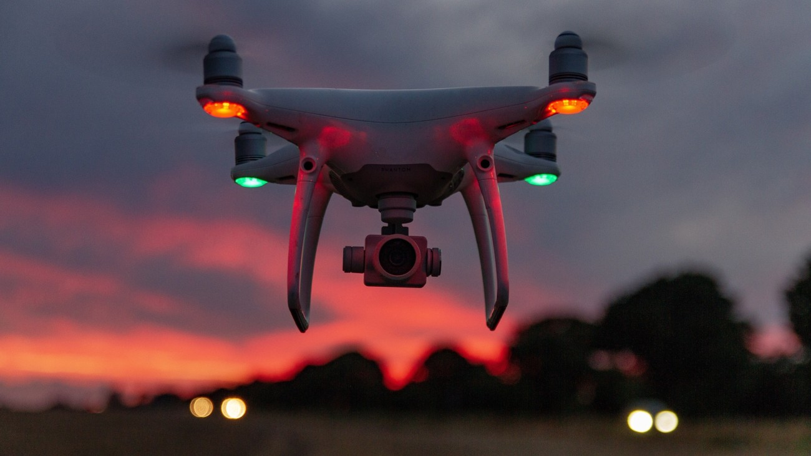
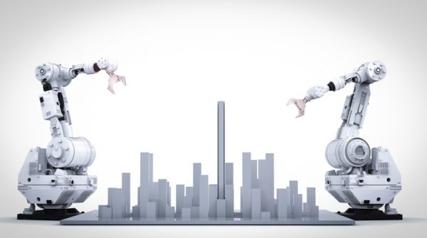
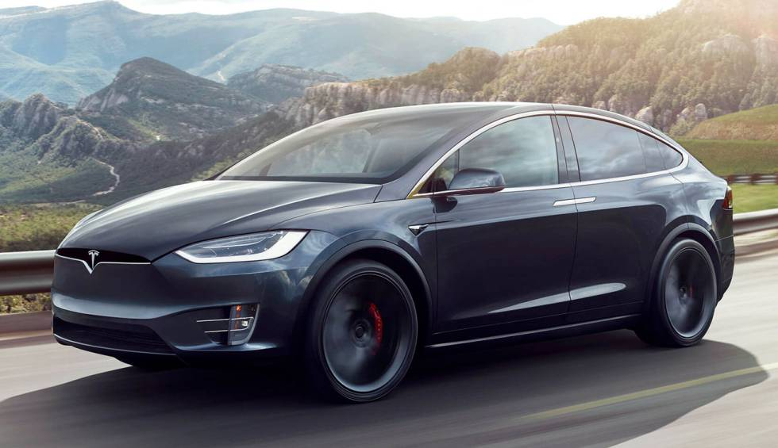
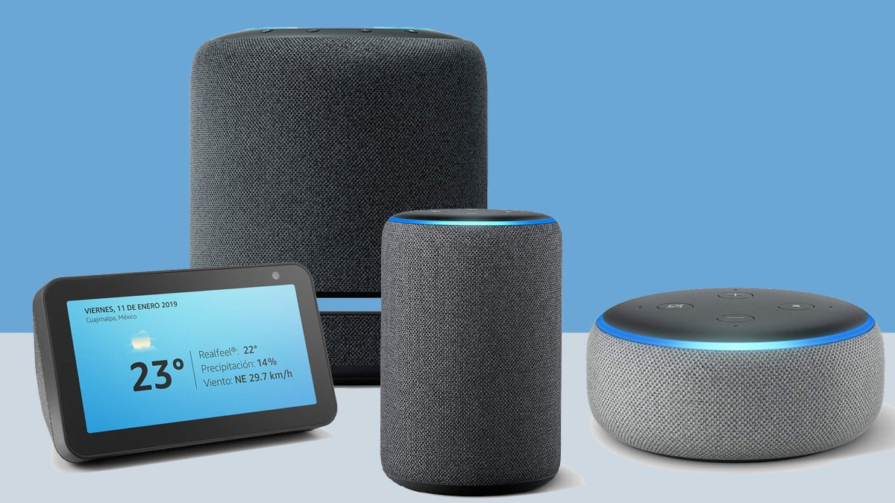

Ejemplos de Dispositivos Autónomos
Objetos autónomos, mejoras en la automatización y la búsqueda de un blockchain más completo serán algunas de las tendencias más importantes dentro del desarrollo de tecnología durante este año.
Existe un crecimiento en el interés de las compañías en enterarse de las tendencias (lo más nuevo y lo que vendrá en el futuro) en cuanto a desarrollo de tecnología, con el objetivo de mejorar sus procesos de negocios.
A continuación veremos algunos ejemplos de dispositivos autonomos que existen hoy en día.
Drones
Un dron es un vehículo aéreo no tripulado que puede ser controlado a distancia o que puede volar de forma autónoma a través de planes de vuelo controlados por un software en combinación con un GPS.Existen varios tipos de drones. Se pueden clasificar de varias maneras, por ejemplo, en función de su uso o su función, sus dimensiones o su nivel de autonomía. Los drones se pueden utilizar en cualquier situación peligrosa para que la resuelvan personas. Tienen multiples funciones: Sector Defensa, Vigilancia, Seguridad y Protección. Los drones tienen un gran potencial en áreas muy diversas, ya que puede desplazarse rápidamente sobre un terreno irregular o accidentado y superar cualquier tipo de obstáculo ofreciendo imágenes o capturando otro tipo de datos a vista de pájaro, gracias a los dispositivos que puede transportar (cámaras, sensores…) sin riesgos para las personas. Los drones favorecen el sector industrial al poder ser utilizado en procesos productivos, fomentando la capacitación y diversos usos innovación. Los Drones Son herramientas que continúan desarrollándose. Si bien su aplicación es muy variada, seguramente en un futuro no muy lejano, podrán realizar actividades que ahora parecen increíbles. Los Drones tienen un valor bastante caro, un dron en una tienda de electrodomesticos puede costar Q1,199.00.
Robots
Un robot es una entidad virtual o mecánica artificial. En la práctica, esto es por lo general un sistema electromecánico que, por su apariencia o sus movimientos, ofrece la sensación de tener un propósito propio, un robot es una máquina programable capaz de realizar varias funciones o tareas complejas, manipular objetos y realizar automáticamente operaciones, incluyendo diferentes tipos de movimientos, en respuesta a su entorno. Existen diferentes tipos y clases de robots, entre ellos con forma humana, de animales, de plantas o incluso de elementos arquitectónicos pero todos se diferencian por sus capacidades y se clasifican en 4 formas: Androides: robots con forma humana. Imitan el comportamiento de las personas, su utilidad en la actualidad es de solo experimentación. El principal limitante de este modelo es la implementación del equilibrio en el desplazamiento, pues es bípedo; Móviles: se desplazan mediante una plataforma rodante (ruedas); estos robots aseguran el transporte de piezas de un punto a otro; Zoomórficos: es un sistema de locomoción imitando a los animales. La aplicación de estos robots sirve, sobre todo, para el estudio de volcanes y exploración espacial; Poliarticulados: mueven sus extremidades con pocos grados de libertad. Su principal utilidad es industrial, para desplazar elementos que requieren cuidados.
Automoviles
Un vehículo autónomo, también conocido como robótico, o informalmente como sin conductor o auto conducido, es un vehículo capaz de imitar las capacidades humanas de manejo y control. Como vehículo autónomo, es capaz de percibir el medio que le rodea y navegar en consecuencia. El conductor podrá elegir el destino, pero no se le requiere para activar ninguna operación mecánica del vehículo. Los vehículos perciben el entorno mediante técnicas complejas como láser, radar, lidar, sistema de posicionamiento global y visión computarizada. Los sistemas avanzados de control interpretan la información para identificar la ruta apropiada, así como los obstáculos y la señalización relevante. Los vehículos autónomos generalmente son capaces de recorrer carreteras previamente programadas y requieren una reproducción cartográfica del terreno, con lo cual si una ruta no está recogida por el sistema se puede dar el caso que no pueda avanzar de forma coherente y normal. En el mundo hay varios programas activos,para su implantación definitiva se requiere de un ajuste de varios aspectos derivados de la seguridad vial y en materia de seguros. Son algunas de las dudas que concierne una forma de transporte que está cerca de ser realidad en pocos años según empresas involucradas en su desarrollo, como Google, Daimler AG, BMW, Renault, Ford o Volvo.
Electrodomesticos
Existen diversos electrodomesticos como estufa, horno / microondas, lavadora / lavarropas. Lavaplatos / lavavajillas. Refrigerador / nevera / heladera y congelador. Campana extractora / Campana. Secadora / secarropas. Termo eléctrico de agua caliente/ Termotanque/ Boiler. Pero gracias a la automatización estos dispositivos pueden volverse autonomos al usar inteligencia artificial (AI). Por ejemplo: las cafeteras que se programan para que todos los días a cierta hora este listo el café, la ganadora a la mejor relación calidad precio, la Delonghi Magnifica S ECAM 22.110. B. Dentro de esta gama no hay ningún otro modelo que la supere. Las lavavajillas que hacen el labor de lavar los platos por nosotros mismos, esta la freidora de aire que frie a los alimentos sin la necesidad de estar usando la estufa y no usa aceite. Las air fryer te ayudan a preparar alimentos fritos sin sumar calorías a tu dieta. De esta forma, puedes preparar todo tipo de comida que necesite meterse en aceite. En sí los aparatos electrodomesticos son autonomos ya que nos facilitan hacer cosas de forma manual, por ejemplo, el microondas nos facilita a calentar la comida sin necesidad de usar la estufa, la estufa nos ayuda a cocinar la comida sin la necesidad de estar prendiendo fuego.

Asistentes virtuales
Un asistente virtual es una especie de agente de software que ofrece servicios y ayuda para automatizar y realizar tareas con una voz sintética. Estos beneficios estarán basados en los datos que le daremos sobre nosotros, como nuestro nombre, lugar de residencia, preferencias en usos de servicios, ubicación, etc. Los asistentes virtuales son capaces de realizar tareas como, Encontrar teléfonos, Hallar recomendaciones de establecimientos, Traducir frases a otros idiomas, Realizar llamadas de emergencia, Hacer búsquedas en Internet y Ejecutar operaciones matemáticas. los asistentes vituales mas conocidos son: Alexa, es el asistente virtual controlado por voz creado por Amazon, y lanzado en noviembre de 2014 junto a su línea de altavoces inteligentes Echo. Siri, es un asistente inteligente que te ayuda a hacerlo todo más rápido en tus dispositivos Apple. Incluso antes de que se lo pidas. El Asistente de Google, es un asistente virtual desarrollado con Inteligencia artificial por Google que está disponible principalmente en dispositivos móviles y domésticos inteligentes. Cortana, es un asistente virtual creado por Microsoft para Windows 10, Windows 10 Mobile, Windows Phone 8.1, altavoz inteligente Invoke, Microsoft Band, Xbox One, Windows Mixed Reality, y Amazon Alexa.
